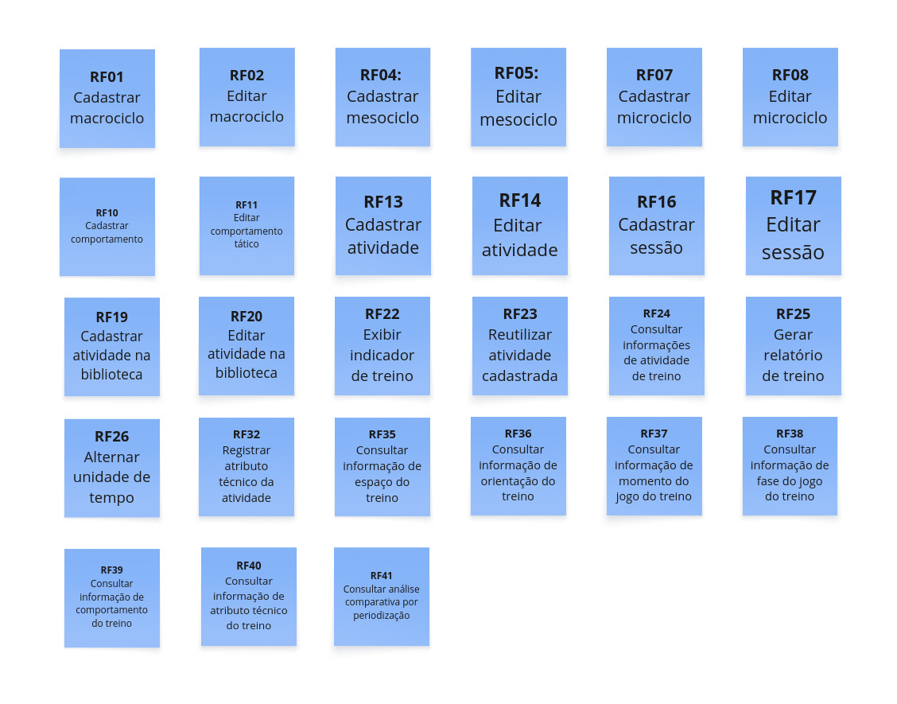

10 Backlog do Produto
Esta seção descreve o backlog de produto (preliminar ou completo, dependendo do produto), que é uma lista priorizada de todas as funcionalidades e melhorias planejadas para o software. Também aborda a priorização dessas funcionalidades e o que será entregue no Produto Mínimo Viável (MVP).
10.1 Priorização do Backlog Geral e MVP
Para priorizar o backlog do FutBoard, cada requisito funcional (RF) recebeu cinco notas: valor de negócio, frequência de uso, esforço, complexidade e conhecimento da equipe. As três últimas foram combinadas em uma única medida, o esforço técnico, que foi cruzada com o valor de negócio para posicionar cada RF em um quadrante da matriz Valor x Esforço.
1. Critérios e legendas
1.1 Valor de negócio
O valor de negócio foi definido a partir da justificativa dada pelo cliente para cada funcionalidade
| Nota | Nível de valor | Descrição |
|---|---|---|
| 4 | Muito Alto | O sistema necessita dessa funcionalidade. |
| 3 | Alto | Agrega muito valor ao produto e deve ser priorizado. |
| 2 | Moderado | Seria interessante ter, mas o sistema funciona perfeitamente sem.. |
| 1 | Baixo | Não faz sentido para o projeto neste momento |
1.2 Frequencia de Uso
A frequencia de uso foi definida de acordo com a opinião do cliente levando em consideração o quão frequente será utilizado cada requisito.
| Pontuação | Interpretação | Descrição |
|---|---|---|
| 1 | Nunca | Em nenhum momento |
| 2 | Rara | Em situacoes especificas |
| 3 | Ocasionalmente | Mensalmente |
| 4 | Frequente | Semanalmente |
| 5 | Muito frequente | Diariamente |
1.3 Esforço
| Pontuação | Interpretação | Descrição |
|---|---|---|
| 1 | Esforço baixo | Até 2 horas |
| 2 | Esforço moderado | Entre 2 e 6 horas |
| 3 | Esforço alto | Entre 6 e 12 horas |
| 4 | Esforço muito alto | Mais de 12 horas |
1.4 Complexidade
| Pontuação | Interpretação |
|---|---|
| 1 | Operações cadastrais elementares (CRUD direto) em entidades isoladas, com validações de formato padronizadas, sem dependências de fluxo ou cálculos. Atividades com consumo de dados do banco. |
| 2 | Operações com dependência hierárquica (efeitos em cascata), integridade referencial estrita, upload de arquivos ou manipulação de coleções locais. |
| 3 | Lógica de negócio analítica, processamento em tempo de execução, cálculos derivados e reatividade/interdependência entre múltiplos componentes visuais. |
| 4 | Requisitos com alta incerteza técnica, algoritmos pesados de inferência/estatística ou dependência crítica de serviços/APIs externas de terceiros. |
1.5 Conhecimento da equipe
| Pontuação | Interpretação |
|---|---|
| 1 | A equipe domina plenamente os conhecimentos necessários. |
| 2 | A equipe possui conhecimento suficiente, com pouca aprendizagem adicional. |
| 3 | A equipe precisa desenvolver conhecimentos relevantes. |
| 4 | A equipe ainda não possui os conhecimentos ou recursos necessários. |
2. Como as notas foram definidas: votação e média
As notas de esforço, complexidade e conhecimento da equipe não foram decididas por uma pessoa só. Para cada critério de cada requisito, todos os seis membros da equipe votaram individualmente, usando as legendas acima, e a nota final foi a média dos votos, arredondada para o inteiro mais próximo (valores com 0,5 sobem para o inteiro seguinte).
Exemplo de votação para um critério de um requisito:
| Membro | Voto |
|---|---|
| Giovana | 3 |
| Guilherme L. | 3 |
| Guilherme T. | 2 |
| Gustavo | 2 |
| Leonardo | 3 |
| Rafael | 2 |
| Média | 2,5 → 3 |
Cálculo: (3 + 3 + 2 + 2 + 3 + 2) / 6 = 2,5, arredondado para 3.
3. Esforço técnico
O esforço técnico resume o custo de desenvolvimento de um RF em um único número, entre 1 e 4, calculado como a média simples das três notas finais:
Esforço técnico = (Esforço + Complexidade + Conhecimento da equipe) / 3
Exemplo com o RF31 (Gerar análise textual do treino): (3 + 4 + 4) / 3 = 3,67.
4. Matriz Valor x Esforço e quadrantes
Cada RF é posicionado em um quadrante comparando o valor de negócio com o esforço técnico, tendo 2 como ponto de corte nos dois eixos.
| Quadrante | Regra | Leitura | Prioridade sugerida |
|---|---|---|---|
| Q2 Alto valor / Baixa carga técnica | Valor > 2 e esforço técnico <= 2 | Alto valor / Baixa carga técnica | Prioridade 1 |
| Q1 Alto valor / Alta carga técnica | Valor > 2 e esforço técnico > 2 | Alto valor / Alta carga técnica | Prioridade 2 |
| Q3 Baixo valor / Baixa carga técnica | Valor <= 2 e esforço técnico <= 2 | Baixo valor / Baixa carga técnica | Prioridade 3 |
| Q4 Baixo valor / Alta carga técnica | Valor <= 2 e esforço técnico > 2 | Baixo valor / Alta carga técnica | Prioridade 4 |
A classificação foi automatizada na planilha com a fórmula abaixo, em que a coluna C guarda o valor de negócio e a coluna H o esforço técnico:
=MAP(C3:C500; H3:H500; LAMBDA(val; esf;
SE(esf=""; "";
IFS(
(esf>2)*(val>2); "Quadrante 1";
(esf<=2)*(val>2); "Quadrante 2";
(esf<=2)*(val<=2); "Quadrante 3";
(esf>2)*(val<=2); "Quadrante 4"
))
))
10.2 Validação do Backlog e Escopo do MVP com o Cliente
Após a priorização preliminar do backlog por meio da matriz Valor x Esforço e a consolidação dos requisitos nos quadrantes, a equipe realizou a validação do backlog e da delimitação do MVP diretamente com o cliente (o técnico Marcus Vinicius).
Via Whatsapp, a equipe utilizou e encaminhou ao cliente a imagem MVPvalidado (armazenada na pasta assets e ilustrada a seguir), contendo a organização visual dos cartões de requisitos levantados para o MVP. Acessar Validação do Cliente

MVPvalidado)Explorar o Frame interativo do MVP validado
Durante a validação via WhatsApp, o treinador Marcus Vinicius avaliou o quadro apresentado na imagem e confirmou que o conjunto de requisitos selecionado contempla com fidelidade as necessidades prioritárias para o MVP do FutBoard.
1. Justificativa para o MVP
A priorização do MVP baseou-se na matriz de Valor versus Esforço e na frequência de uso de cada funcionalidade. Selecionamos os requisitos dos quadrantes 1 e 2 que são de maior valor para o cliente e que apresentavam nível de uso de 3 a 5 (mensal, semanal e diário).
O RF01 foi marcado pelo cliente como valor de negócio 4 e frequência de uso de 2, como estavámos selecionando os requisitos que estavam no quadrante 1 e 2 cuja a frequência de uso estava entre 3 e 5 esse requisito ficava de fora do MVP. Porém a equipe logo percebeu que o RF01 é vital para o funcionamento do sistema. Por isso o RF01 foi incorporado ao MVP.
2. Análise de Dependências Estruturais (Inclusão do RF01)
A frequência de uso isoladamente não substitui a análise de dependências de arquitetura e domínio. O RF01 (Cadastrar macrociclo) possui Valor 4 e Frequência 2 (pois o macrociclo representa a temporada e é cadastrado poucas vezes ao ano), o que o deixaria fora de um filtro puramente mecânico por frequência. Contudo, na árvore hierárquica de periodização do sistema (Macrociclo → Mesociclo → Microciclo → Sessão → Atividades → Indicadores/Gráficos), o RF01 é pré-requisito estrutural obrigatório para RF04, RF07, RF16 e todas as consultas analíticas. Por essa dependência técnica direta, o RF01 foi incorporado ao MVP, fechando os 27 RFs (26 RFs com Valor 4 e Frequência ≥ 3 + RF01).
3. Por que estamos utilizando esses critérios?
-
Contexto e desafio: Na avaliação inicial, aproximadamente 90% das funcionalidades foram avaliadas pelo cliente com valor de negócio máximo, gerando um escopo amplo demais para o MVP.
-
Ajuste metodológico: Seguindo a orientação do professor, adicionamos a frequência de uso como segundo critério de corte.
-
Resultado: O cruzamento entre valor e frequência permitiu priorizar o que era realmente essencial, reduzindo o escopo com validação e respaldo do cliente.
10.4 Histórico de Rastreabilidade
| Versão | Data | Descrição | Autor(es) | Artefato |
|---|---|---|---|---|
1.0 |
12/10/2026 | Versão consolidada referente à entrega da Unidade 02 | Rafael Wasconcelos | Visualizar v1.0 |
2.0 |
15/11/2026 | Atualização referente à entrega da Unidade 03 | Rafael Wasconcelos | Versão Atual |